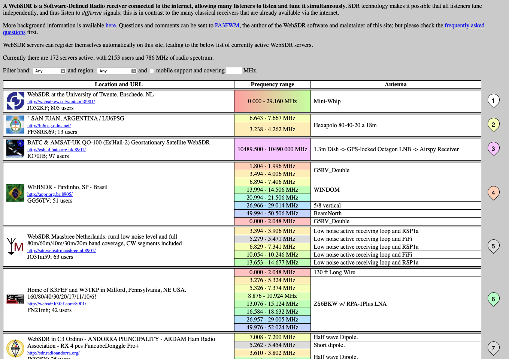
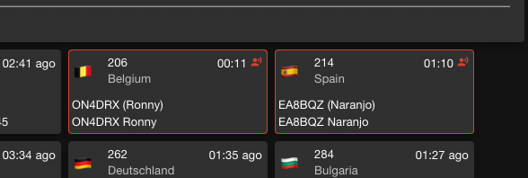
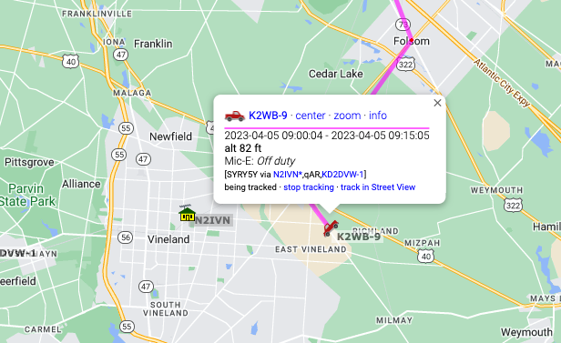
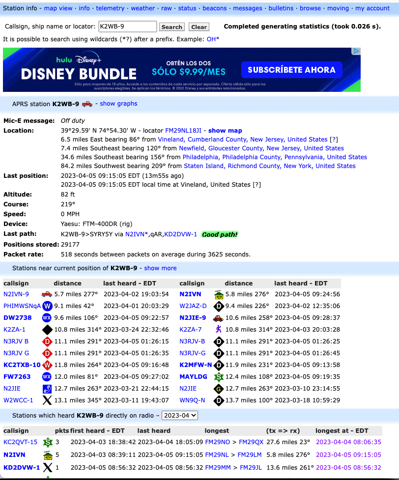
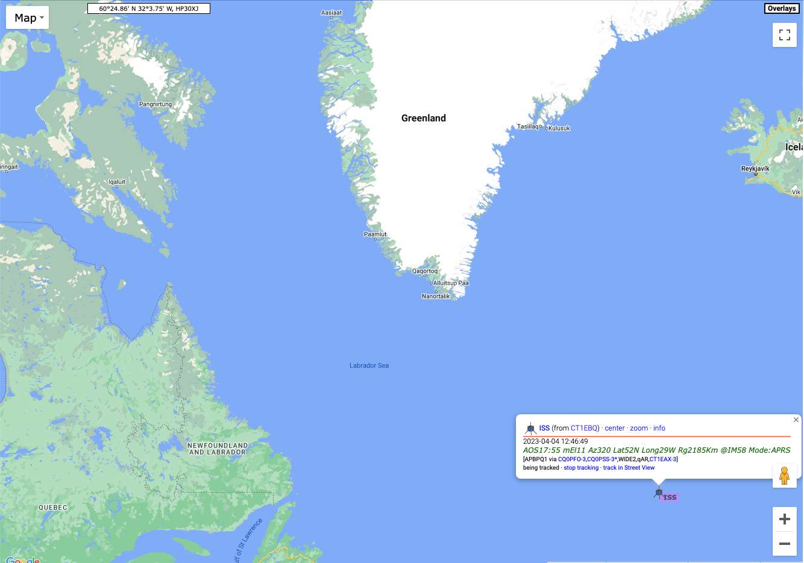
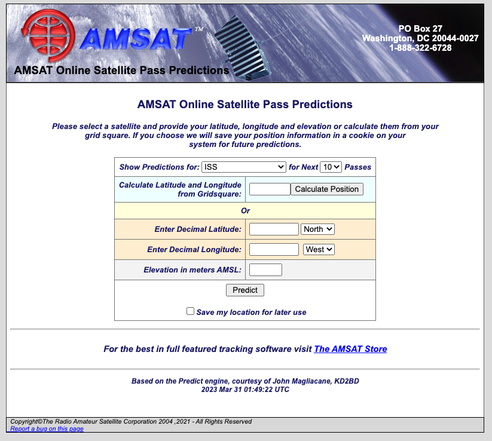
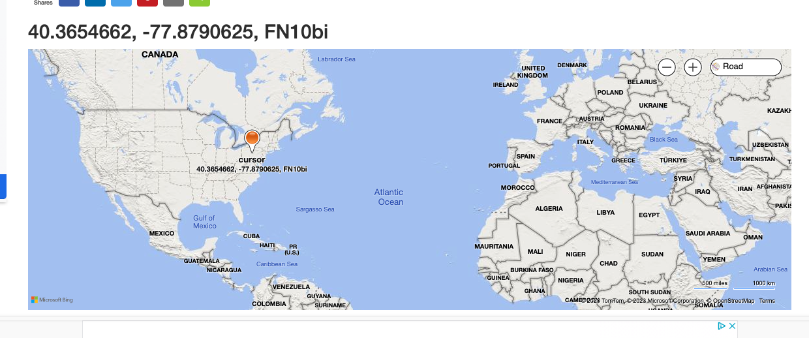
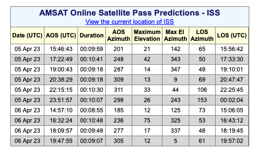

Chapter 3 Hands-on hamming
Quest 1: WebSDR
Thanks to the widespread availability of inexpensive software-defined radios (SDRs), it’s possible to listen to the ham bands over the internet from sites located all over the world.
In this quest, we’ll check-in on the bands and listen to some HF [QSO]s.
- Vist the WebSDR site at https://websdr.org.
You will see a screen like the following:

Quest 2: DMR
You can listen to Digital Mobile Radio (DMR) transmissions across the globe on the web without having to log in or have a ham radio license.
In this quest, we’ll listen in on some conversations using DMR.
Remember, as a ham, all of our communications except those controlling aircraft or satellites are presumed public.
- Visit the Brandmeister Network server’s hoseline site.
You will see something like the following:
knitr::include_graphics("include/img/brandmeister-hoseline-2023-04-03.png")Figure 3.1: Brandmeister DMR hoseline as of 2023-04-03 about 1745Z
This shows all of the stations connected to the Brandmeister network in the entire world.
- To listen in on one of these [QSO]s, click on an active QSO. Active QSOs will be outlined in red.

You can also listen in on specific talkgroups. A talkgroup is like a repeater, except that it repeats signals from stations connected via the internet. There is often traffic on talkgroup 91 (Worldwide) or talkgroup 93 (North America), so let’s listen in on those.
- Click the PLAYER button in the upper right hand corner.
This will open a small panel where you can select what talkgroups to listen to or which stations to monitor.
Figure 3.2: PLAYER panel from hose.brandmeister.network
Quest 3: APRS
In this quest, we’ll check-in on the Automatic Packet Reporting System (APRS) where hams across the world provide real-time information about their locations and exchange messages, including weather reports.
- Visit the APRS.fi website.
The first time you visit this site, it may show you a view of APRS activity near the APRS.fi website author’s home in Finland (hence the .fi web domain).
Feel free to scroll out using the minus (-) button in the lower right hand corner and then click and drag to another location. For example, here is a view near Philadelphia, PA.
Figure 3.3: APRS activity near Philadelphia, PA on 2023-04-05
Notice that some of the symbols look like vehicles and have a track that appears to show where they’ve been.
- Mouse over one of those symbols.
You should see a set of lines connecting the vehicle symbol to another one on the map. The lines show where the RF signal from the vehicle traveled before being heard and sent over the Internet to the APRS.fi site.
Figure 3.4: APRS track of moving vehicle K2WB-9.
The figure shows the station K2WB connecting to a home-based relay station N2IVN and the relayed signal from N2IVN being heard by KD2DVW-1.
- Click on the mobile (moving) station’s icon.
A small window will open with information about that station.

- Click on the info button in the small window.

- Enter
ISSin the “Track callsign:” window in the upper right of the aprs.fi site.
The International Space Station has an APRS beacon! So, if you have an APRS-enabled radio set up you can hear the ISS when it passes near your location.
I did this on the morning of 2023-04-05, and here was the result.
knitr::include_graphics("include/img/aprs-iss-2023-04-05.png")
The ISS was somewhere over the North Atlantic Ocean. I say was, because if you look closely, you’ll see that the last time the ISS was heard on APRS was on 2023-04-04, about 20 hours before the time I took this screenshot. The APRS beacon goes on and off from time to time.
Quest 4: Satellite tracking
Hams have launched satellites that permit communication across large areas, and the International Space Station (ISS) has ham radio equipment on board.
The window in the upper left will show a map of the current location of the ISS.
The window in the upper right will show the current live video feed from the ISS. If it’s dark, that’s probably because the ISS is on the night side of the Earth.
- Visit the Amateur Satellite Corporation (AMSAT) tracking site.
Here you can choose to track a number of amateur satellites.

The site will calculate the next time a satellite will pass over your location. You need to give it your latitude and longitude or your grid square for this to work.
What’s a grid square? Well every part of the Earth has been assigned a code that is a combination of letters and numbers. The codes are part of the Maidenhead Locator System.

By <a href=“https://en.wikipedia.org/wiki/User:Mysid” class=“extiw” title=“w:User:Mysid”>Mysid</a> - Self-drawn in Inkscape., Public Domain, Link
See the following two figures from Wikipedia.

By User:Denelson83 - <a rel=“nofollow” class=“external free” href=“http://visibleearth.nasa.gov/view_rec.php?id=2433">http://visibleearth.nasa.gov/view_rec.php?id=2433</a>;, Public Domain, Link

By Oona Räisänen (<a href=“https://en.wikipedia.org/wiki/User:Mysid” class=“extiw” title=“w:User:Mysid”>Mysid</a>) - Base map from <a href=“//commons.wikimedia.org/wiki/File:Blank_map_of_Europe_(polar_stereographic_projection)_cropped.svg” class=“mw-redirect” title=“File:Blank map of Europe (polar stereographic projection) cropped.svg”>Image:Blank map of Europe (polar stereographic projection) cropped.svg</a>; Grid drawn in Inkscape and based on the (public domain) output of Great Circle Maps v2.3., CC BY-SA 3.0, Link
_cropped.svg){kind=link}
To find out your particular grid square, visit https://www.karhukoti.com/maidenhead-grid-square-locator. The site gives you both your latitude and longitude and grid square. The figure below shows my approximate location and grid square, FN10.

Notice that grid squares can be increasingly precise. For our purposes now, the four character grid square is sufficient. Hams who operate digital modes like FT8 and FT4 using the WSJT-X software use grid squares, too. And some hams “collect” contacts in different grid squares. For now, we’ll use our grid square to calculate when the ISS will pass over our grid square.
- Enter your grid square in the AMSAT Tracking site.
Hit “Calculate Position” to let the site calculate your latitude and longitude, then hit the “Predict” button.
The results show the next several passes of the ISS over my grid square. Yours will be different, even if you live in my grid square, because the ISS is always moving.
